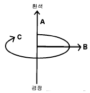

1과목: 색채심리
1. 분리효과에 의한 배색 설명 중 맞는 것은?
2. 다음 중 가장 화려한 느낌을 주는 배색은?
3. 색에서 느껴지는 시간감에 대한 설명 중 틀린 것은?
4. 다음 색채의 연상을 자유 연상법으로 조사한 내용 중 가장 거리가 먼 것은?
5. 색에는 그 지역마다 특유의 색이 있으며 선호하는 색이 다른데 다음 중 잘못된 것은?
6. 비렌(Faber Birren)의 형태와 색의 연관 관계 중 잘못된것은?
7. 지역색을 활용한 내용 중 가장 적절한 것은?
8. 노랑의 보조색으로 강한 대비효과를 주어 안전 색채의 기능을 갖는 가장 적합한 색은?
9. 효과적인 제품 디자인을 위한 색채와 거리가 먼 것은?
10. 다음 중 제품에 색채연상을 활용한 예가 가장 잘못된것은?
11. 예술, 디자인계 사조별 색채특성에 관한 설명 중 잘못된것은?
12. 색채심리요법에 관한 설명 중 틀린 것은?
13. 색채와 다른 감각간의 교류현상으로 메시지와 의미를 전달하는 특성을 가진 것은?
14. 다음 중 독일의 정신물리학자 이름을 딴 '페흐너 색채'와 관련이 있는 것은?
15. 1990년 프랭크 H. 만케가 정의한 색채체험에 영향을 주는 6개의 관련요소로 구성한 색경험의 피라미드에서 6단계 (최고단계)에 해당하는 것은?
16. 우리의 전통색은 음양오행 사상에 바탕을 두고 있다. 다음 중 서쪽을 지칭하며 가을을 뜻하고 오른쪽을 나타내는 색은?
17. 다음 중 한국에서 초록이 쉽게 연상되는 계절은?
18. SD법의 절차나 세부 방법에 해당되지 않는 것은?
19. 배색의 경우 나타나는 대비 현상에 관한 설명 중 잘못된것은?
20. 배색에 있어서 보색대비의 경우를 설명한 것 중 잘못된것은?
2과목: 색채디자인
21. 사계절의 색채표현법을 도입한 미용 디자인의 퍼스널 컬러 진단법에서 정확한 진단을 위해 지켜야할 사항이 아닌것은?
22. 로고, 심볼, 캐릭터 뿐 아니라 명함 등의 서식류와 외부적으로 보이는 사인 시스템에서 기업의 이미지를 일관성 있게 보여주고 관리하는 시각디자인의 방법은?
23. 인간생활의 질적 수준을 향상시키기 위하여 형식미와 기능 그 자체와 유기적으로 결합된 형태, 색채, 아름다움을 나타내고자 할 때 필요한 디자인 요건은?
24. 다음 유행색에 대한 설명 중 잘못된 것은?
25. 색채계획에 있어서 전체적 느낌을 전달할 수 있고 가장 넓은 면을 차지하는 색은?
26. 다음 중 색채조절에 관한 설명 중 가장 올바른 것은?
27. 색채를 효율적으로 활용하기 위해 계획, 조직, 지휘, 조정, 통제하는 활동을 의미하는 것은?
28. 디자인의 원리로 적당치 않은 것은?
29. 다음 중 유행색에 가장 민감하게 색채계획을 해야 하는 것은?
30. 시장 세분화(market segmentation)의 방법이 아닌 것은?
31. 1960년대에 미국에서 일어난 추상미술의 한 동향으로 색채의 시지각 원리에 근거를 두고 시각적 환영과 지각 등 심리적효과를 적극적으로 활용한 미술사조는?
32. 미국적 디자인의 특성이 된 유선형이 대두된 시기는?
33. 제품디자인 최종 단계에서 실제 부품, 작동방법과 같은 기능을 부여한 시작모델은?
34. 다음 중 색채의 공감각과 가장 관계가 없는 것은?
35. 원래는 낡은 가구를 모아 새로운 가구를 만든다는 의미 또는 저속한 모방예술을 의미하기도 하였으나 오늘날에 있어서는 예술의 수용방식이나 특수한 상태를 가리키는 말이 된 것은?
36. 디자인의 일반적인 정의로 바람직하지 못한 것은?
37. 빅터 파파넥(Victor Papanek)은 형태와 기능을 포괄적 의미로서 복합기능이라고 규정지었다. 다음 중 그가 규정한 복합기능의 구성요인에 해당하지 않는 것은?
38. 미용디자인의 특성 중 거리가 먼 것은?
39. 형태의 개념요소와 거리가 먼 것은?
40. 미용디자인에서 메이크 업의 균형을 갖게 하는 요인이 아닌 것은?
3과목: 섹채관리
41. 다음 중 그래픽 카드에 대한 설명이 아닌 것은?
42. 금속감이 없는 솔리드그레이와 알루미늄 가루가 섞인 도장된 메탈릭실버의 광택을 측정하기 위한 가장 좋은 방법은?
43. 디지털 이미지에서 시안(C),마젠타(M),노랑(Y),검정(K) 4색상이 재생되는 매체인 것은?
44. 육안 검색을 할 때 주의 사항으로 맞는 것은?
45. KS A 3502 규격의 안전색의 일반적 사항 중 표시사항이 방사능인 경우 안전색의 종류는?
46. 모니터에서 디지털 색채 영상을 구성하는 최소의 단위는?
47. 같은 물체색이라도 조명에 따라 색이 달라져 보이는 성질은?
48. CMS(Color Management System)에 대한 가장 올바른 설명은?
49. 컴퓨터 자동 배색 장치의 특징 중 틀린 것은?
50. 다음 중 색채 측정 결과에 반드시 첨부해야 하는 사항이 아닌 것은?
51. 필터식 색채계의 구조에 포함되지 않는 것은?
52. 다음 중 색온도가 가장 높은 완전복사체의 광원색은?
53. 우리나라에서 전통적으로 사용하는 천연염료의 하나로, 방충성이 있으며, 이 즙을 피부에 칠하면 세포에 산소 공급이 촉진되어 혈액의 순환을 좋게 하는 치료제로 알려진 것은?
54. 염료와 비교하여 안료의 일반적인 특성 중 맞는 것은?
55. 도료 중에서 가장 종류가 많으며, 일반적으로 내알칼리성으로서 콘크리트나 모르타르의 마무리 도료로 쓰이는 것은?
56. 필터식 측색기의 특징을 가장 잘 설명한 것은?
57. 디지털 색채 시스템이 아닌 것은?
58. 다음 중 육안조색과 가장 관계가 없는 것은?
59. 다음 연색성 등급 중 연색지수가 가장 높은 등급은?
60. 자동차의 내장 및 외장의 표면코팅, 유성 및 수성 페인트, 종이 또는 금속판에 사용하는 잉크 등과 같은 색재료에 사용되는 색소는?
4과목: 색채지각의이해
61. 다음 중 파장이 가장 짧은 것은?
62. 어떤 색을 일정시간 보고난 후 그 색의 자극이 망막상에 남아 있는 현상은?
63. 태양빛을 프리즘에 통과시키면 색띠가 나타난다. 이와 관련이 없는 것은?
64. 하얀 바탕종이에 빨강색 원을 놓고 얼마간 보다가 하얀 바탕종이를 빨강색 종이로 바꾸어 놓게 되면 빨강색 원은 검정색으로 보이게 된다. 이 현상을 설명하는 대비는?
65. 다음 중 한색 계열에 속하는 색은?
66. 빨간 물감, 노란 가방과 같이 색감을 지각할 수 있는 광수용기에 관한 설명으로 틀린 것은?
67. 다음 배색 중 명시성이 가장 높은 배색은? (단, 글씨색/배경색)
68. 다음 중 감법혼색의 3원색이 아닌 것은?
69. 빛의 파장 가운데 노란색의 파장 범위는?
70. 빨강(5R 4/14) 바탕 위에 파랑(5B 4/8)이 놓여 있을 때 다음 중 가장 크게 발생하는 대비현상은?
71. 명도대비에 대한 설명 중 틀린 것은?
72. 가법혼색에서 파랑과 녹색의 빛을 동시에 비추었을 때 얻어지는 색은?
73. 색상의 강도에 의해 강한 느낌을 주기 때문에 디자인에서 액센트로 자주 사용되는 것은?
74. 감법혼합에 대한 설명 중 틀린 것은?
75. 다음 색광 및 색료의 혼색에 관한 내용 중 틀린 것은?
76. 경연감, 즉 강한 느낌과 부드러운 느낌에 주된 영향을 미치는 것은?
77. 다음 중 보색관계인 두색을 인접시켰을 때 서로의 영향으로 본래의 색보다 가장 높아지는 것은?
78. 색채지각설 중 영· 헬름홀쯔의 3원색에 해당하는 것은?
79. 색료혼합에 있어서 보색관계의 두 색에 관한 이론적 설명중 가장 올바른 것은?
80. 유목성에 대한 일반적인 설명 중 틀린 것은?
5과목: 색채체계의이해
81. 제 5과목: 색채체계의이해 미도에 의한 색채조화론을 연구한 사람은?
82. 먼셀표색계의 색채표기법은?
83. NCS표색계에서 S1020-Y80R로 표기하였을 경우 틀린 설명은?
84. NCS 색체계는 빨강, 노랑, 초록, 파랑 외에 두 가지를 추가하고 있다. 그 두 가지는?
85. ISCC-NBS 색명법에 대한 설명이 아닌 것은?
86. ISCC-NBS 색명법의 3차원적 특성도해에서 보여지는 A, B, C가 의미하는 것은?

87. 오스트발트 표색계에 대한 설명이 아닌 것은?
88. 다음 중 CIE 색도도에 대한 설명으로 잘못된 것은?
89. 다음 중 전통 오방색과 관계가 없는 색은?
90. 다음의 설명 중 현색계의 장점으로 들 수 있는 것은?
91. 오스트발트 체계론의 기본 색상에 속하지 않는 것은?
92. 다음 중 색에 대한 의사소통이 간편하도록 색이름을 표준화한 것은?
93. 오스트발트 조화론의 기본 개념은?
94. Munsell은 무채색 축을 기준으로한 자신의 색 입체를 무엇이라 하였는가?
95. 먼셀(Munsell)의 기본 색상 기호는?
96. 동물에서 유래한 색이름이 아닌 것은?
97. 문과 스펜서의 조화이론에 들지않는 것은?
98. 색채 표준의 발전과정에 따른 색채 연구자와 이론의 연결이 옳은 것은?
99. 다음 조화에 관한 설명 중 가장 올바른 것은?
100. 오스트발트표색계의 설명 중 틀린 것은?